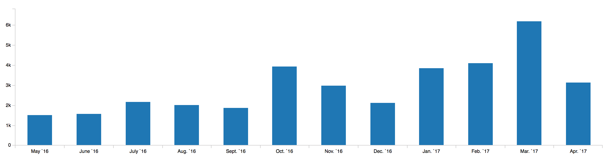
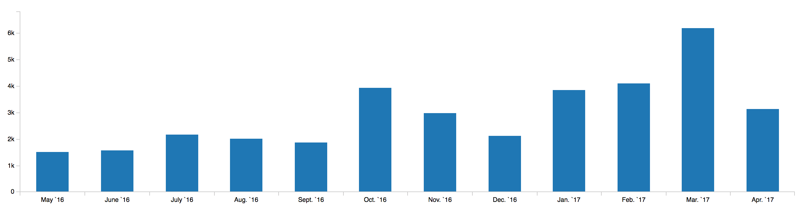

Any style guide written in English is either so brief that it’s ambiguous, or so long that no one reads it. -- Bob Nystrom, "Hardest Program I've Ever Written", Dart, Google.
Scalafmt turns the mess on the left into the (hopefully) readable, idiomatic and consistently formatted Scala code on the right.
object FormatMe { List(number) match
{ case head :: Nil
if head % 2 == 0 => "number is even"
case head :: Nil =>
"number is not even"
case Nil =>
"List is empty" }
function(arg1,
arg2(arg3(arg4,
arg5, "arg6")
, arg7 + arg8),
arg9.select(1, 2,
3, 4, 5, 6)) }
object FormatMe {
List(number) match {
case head :: Nil if head % 2 == 0 =>
"number is even"
case head :: Nil =>
"number is not even"
case Nil =>
"List is empty"
}
function(
arg1,
arg2(arg3(arg4, arg5, "arg6"),
arg7 + arg8),
arg9.select(1, 2, 3, 4, 5, 6))
}
The goal of scalafmt is to produce good enough formatted code so that you can focus on programming instead of manipulating syntax trivia. Scalafmt can be used in several environments such as the command line, text editors and build tools.
It is not a goal to format every single Scala source file under the sun. In particular, scalafmt cannot format deeply nested computer generated code.
Scalafmt is maintained by @olafurpg in his free time. Bug reports, feature requests, questions and PRs are welcome. Complaints and unfriendly attitude is not welcome.
Curious to learn more about scalafmt? Check out this talk:
CLI
The recommended way to install thescalafmt command line tool is with
Coursier.
Coursier
NOTE To install Coursier see here
Create a standalone executable in /usr/local/bin/scalafmt with (sudo if necessary):
coursier bootstrap com.geirsson:scalafmt-cli_2.12:1.5.0 \
-r bintray:scalameta/maven \
-o /usr/local/bin/scalafmt --standalone --main org.scalafmt.cli.Cli
scalafmt --version # should be 1.5.0
Alternatively you can create a slim 15 KiB bootstrap script with:
coursier bootstrap com.geirsson:scalafmt-cli_2.12:1.5.0 \
-r bintray:scalameta/maven \
-o scalafmt --main org.scalafmt.cli.Cli
./scalafmt --version # should be 1.5.0
To customize the JVM options, use the Coursier option --java-opt, more info with
coursier bootstrap --help | grep -A 1 "\-\-java-opt"
Pre-release
Our CI publishes a pre-release version of scalafmt to Bintray on every merge into master. To use a pre-release, replace 1.5.0 with the version here:
If you use coursier to install a pre-release, be sure to include the flag -r bintray:scalameta/maven
so that the artifact can be resolved.
If you use sbt to install a pre-release, be sure to add the following setting
resolvers += Resolver.bintray("scalameta", "maven")
Nailgun
Nailgun is recommended if you want to integratescalafmt with a
text editor like vim/Emacs/Atom/Sublime/VS Code.
-
Make sure you have a nailgun client installed. For example with
brew install nailgun. -
Create a standalone executable in
/usr/local/bin/scalafmt_ngwith (sudo if necessary)coursier bootstrap --standalone com.geirsson:scalafmt-cli_2.12:1.5.0 \ -r bintray:scalameta/maven \ -o /usr/local/bin/scalafmt_ng -f --main com.martiansoftware.nailgun.NGServer scalafmt_ng & // start nailgun in background ng ng-alias scalafmt org.scalafmt.cli.Cli ng scalafmt --version # should be 1.5.0
Nailgun keeps scalafmt running on a local server to avoid the JVM startup penalty and also so scalafmt can benefit from JIT. This makes scalafmt up to 10x faster when formatting a single file from the CLI. The downside to Nailgun is that the setup is complicated and the long-running server needs to be restarted once in awhile.
Homebrew
You can install scalafmt via Homebrew using a custom formulabrew install --HEAD olafurpg/scalafmt/scalafmt
scalafmt --version // should be 1.5.0
// to upgrade between releases
brew upgrade scalafmt
--help
NOTE. This help page is generated from themaster branch and
may include flags that have not been published yet.
build commit: 19122f8c9c
build time: Tue Apr 24 22:26:18 UTC 2018
scalafmt 1.5.0-8-19122f8c
Usage: scalafmt [options] [<file>...]
-h, --help prints this usage text
-v, --version print version
<file>... file or directory, in which case all *.scala files are formatted.
--stdout write formatted files to stdout
--git <value> if true, ignore files in .gitignore (default false)
--exclude <value> file or directory, in which case all *.scala files are formatted.
-c, --config <value> a file path to .scalafmt.conf.
--config-str <value> configuration defined as a string
--stdin read from stdin and print to stdout
--no-stderr don't use strerr for messages, output to stdout
--assume-filename <value>
when using --stdin, use --assume-filename to hint to scalafmt that the input is an .sbt file.
--test test for mis-formatted code, exits with status 1 on failure.
--migrate2hocon <value> migrate .scalafmt CLI style configuration to hocon style configuration in .scalafmt.conf
--diff If set, only format edited files in git diff against master.
--diff-branch <value> If set, only format edited files in git diff against provided branch.
--build-info prints build information
--quiet don't print out stuff to console.
--debug print out diagnostics to console.
--non-interactive disable fancy progress bar, useful in ci or sbt plugin.
Examples:
scalafmt # Format all files in the current project, configuration is determined in this order:
# 1. .scalafmt.conf file in current directory
# 2. .scalafmt.conf inside root directory of current git repo
# 3. no configuration, default style
scalafmt --test # throw exception on mis-formatted files, won't write to files.
scalafmt --diff # Format all files that were edited in git diff against master branch.
scalafmt --diff-branch 2.x # same as --diff, except against branch 2.x
scalafmt --stdin # read from stdin and print to stdout
scalafmt --stdin --assume-filename foo.sbt < foo.sbt # required when using --stdin to format .sbt files.
scalafmt Code1.scala A.scala # write formatted contents to file.
scalafmt --stdout Code.scala # print formatted contents to stdout.
scalafmt --exclude target # format all files in directory excluding target
scalafmt --config .scalafmt.conf # read custom style from file
scalafmt --config-str "style=IntelliJ" # define custom style as a flag, must be quoted.
Please file bugs to https://github.com/scalameta/scalafmt/issues
IntelliJ
Here is the plugin. You can install it directly from within IntelliJ,-
open
Settings > Plugins -
open
Browse repositories -
search for
scalafmt - restart IntelliJ.
The default shortcut is Ctrl + Shift + L.
Undo works, but not redo.
The plugin determines which style to use in this order:
-
.scalafmt.confin the project's root directory, if it exists -
$HOME/.scalafmt.conf, if it exists -
Otherwise, uses
defaultstyle.
.scalafmt.conf should look like, see
Configuration.
The scalafmt IntelliJ plugin has a "Format on save" setting.
- To enable for current project: Settings > Tools > Scalafmt
- To enable for all future project: File > Other settings > Default settings > Scalafmt
NOTE. You may need to enable balloons to get error message: Settings > Appearance & Behavior > Notifications > Scalafmt > Popup "Balloon". You need to first check "Display Balloon Notifications".
sbt
You can choose between- sbt-scalafmt (sbt 1.0 only)
- neo-sbt-scalafmt (sbt 0.13 and sbt 1.0)
sbt-scalafmt
// In project/plugins.sbt. Note, does not support sbt 0.13, only sbt 1.0.
addSbtPlugin("com.geirsson" % "sbt-scalafmt" % "1.5.0")
object autoImport {
val scalafmt = taskKey[Unit]("Format Scala sources with scalafmt.")
val scalafmtCheck =
taskKey[Boolean](
"Fails if a Scala source is mis-formatted. Does not write to files.")
val scalafmtOnCompile =
settingKey[Boolean](
"Format Scala source files on compile, off by default. " +
"BEWARE. This task is not incremental, every file in the " +
"project is re-formatted on every compile. " +
"See https://github.com/scalameta/scalafmt/issues/1091")
val scalafmtConfig = taskKey[Option[File]](
"Optional location of .scalafmt.conf file. " +
"If None the default config is used.")
val scalafmtSbt = taskKey[Unit](
"Format *.sbt and project/*.scala files for this sbt build.")
val scalafmtSbtCheck =
taskKey[Boolean](
"Fails if a *.sbt or project/*.scala source is mis-formatted. " +
"Does not write to files.")
val scalafmtOnly = inputKey[Unit]("Format a single given file.")
}Test and Compile configurations.
To enable the plugin for integration tests
inConfig(IntegrationTest)(scalafmtConfigSettings)it:scalafmt to format.
Pro tip. To share configuration across projects, you can define a setting
in build.sbt to generate .scalafmt.conf programmatically on sbt load.
// define setting key to write configuration to .scalafmt.conf
SettingKey[Unit]("scalafmtGenerateConfig") :=
IO.write( // writes to file once when build is loaded
file(".scalafmt.conf"),
"""style = IntelliJ
|# Your configuration here
""".stripMargin.getBytes("UTF-8")
)
neo-sbt-scalafmt
lucidsoftware/neo-sbt-scalafmt is an sbt plugin that
- supports both sbt 0.13 and 1.0.0
- supports any version of scalafmt
- runs in-process
-
uses SBT's
updateresolutions mechanism, which tends to be slow for large multi-module builds.
Gradle
It is possible to use scalafmt in gradle with the following externally maintained plugins:Maven
It is possible to use scalafmt in Maven with the following externally maintained plugin:Vim
- Make sure you have the CLI installed and working.
- install vim-autoformat
-
add to your
.vimrcnoremap <F5> :Autoformat<CR> let g:formatdef_scalafmt = "'scalafmt --stdin'" let g:formatters_scala = ['scalafmt']
Standalone library
Add to your dependencieslibraryDependencies += "com.geirsson" %% "scalafmt-core" % "1.5.0"
libraryDependencies += "com.geirsson" %% "scalafmt-cli" % "1.5.0"
// Scala.js
libraryDependencies += "com.geirsson" %%% "scalafmt-core" % "1.5.0"Use the API like this
scala> org.scalafmt.Scalafmt.format("""
object FormatMe { List(Split(Space, 0).withPolicy(SingleLineBlock(close)), Split(Newline, 1).withPolicy{ case Decision(t@FormatToken(_, `close`, _), s) => Decision(t, List(Split(Newline, 0)))}.withIndent(2, close, Right)) }
""").get
res0: java.lang.String =
"object FormatMe {
List(
Split(Space, 0).withPolicy(SingleLineBlock(close)),
Split(Newline, 1)
.withPolicy {
case Decision(t @ FormatToken(_, `close`, _), s) =>
Decision(t, List(Split(Newline, 0)))
}
.withIndent(2, close, Right)
)
}
"
Help wanted!
- Ensime
- Scala IDE (help wanted!)
- Your favorite editor? Join the gitter channel.
Configuration for scalafmt is defined in a
plain text file .scalafmt.conf using
HOCON syntax.
To reuse your configuration with IntelliJ,
.scalafmt.conf must be placed in the root directory of your project.
Here is an example .scalafmt.conf.
align = true # For pretty alignment.
maxColumn = 100 # For my wide 30" display.
A note of warning. I personally use the default style, which means that the default style is by far the most tested and supported style. Most of the configuration flags are quite innocent, while some of them work very differently (esp. Scala.js). It is very difficult to guarantee that all configurations options play nicely together so I recommend you try not to go too crazy on this part.
The following sections describe the most common configuration options.
NOTE. If you are using scalafmt as a Standalone library, you can
pass in a ScalafmtConfig instance, which is set to ScalafmtStyle.default
by default.
style
Option 1: default// Column 40 |
// non bin packed parent constructors
object DefaultStyle
extends Parent
with SecondParent
with ThirdParent {
// non bin packed arguments
function(
argument1,
argument2(argument3, argument4))
// Vertical alignment only for case arrows
x match {
case 1 => 1
case 11 => 1
}
}
// Column 40 |
// non bin packed parent constructors
object IntelliJStyle
extends Parent
with SecondParent
with ThirdParent {
function(argument1, argument2)
// continuationIndent = 2 # for call + defn site
// align.openParenCallSite = false
// danglingParentheses = true
function(
argument1,
argument2,
argument3,
argument4
)
// openParenCallSite = true
def foobar(argument1: Type1,
argument2: Type2): Int =
argument1 + argument2
}
maxColumn
Default: 80- Keep in mind that 80 characters fit perfectly on a split laptop screen with regular resolution.
- Github mobile view only shows 80 characters and sometimes you might review code on your phone.
- Consider refactoring your code before of choosing a value above 100.
continuationIndent.callSite
Default: 2Example:
function(
argument1 // indented by 2
)
continuationIndent.defnSite
Default: 4
Same as continuationIndent.callSite except for definition site.
Example:
def function(
argument1: Type1): ReturnType // Indented by 4
align
Default: some Align has several nested fields, which you can customize. However, it comes with four possible defaults: none, some, more, & most.align=some
x match { // true for case arrows
case 2 => 22
case 22 => 222
}
def foo(a: Int, // true for defn site open paren
b: String): Int
foo(a: Int, // true for call site open paren
b: String): Int
val x = 2 // false for assignment
val xx = 22
case object B extends A // false for `extends`
case object BB extends A
align=none
x match { // false for case arrows
case 2 => 22 // also comments!
case 22 => 222 // don't align me!
}
def foo(
a: Int, // false for defn site
b: String): Int
foo(
a: Int, // false for call site
b: String): Int
align=more
val x = 2 // true for assignment
val xx = 22
case object B extends A // false for `extends`
case object BB extends A
q -> 22 // true for various infix operators
qq -> 3 // and also comments!
for {
x <- List(1) // true for alignment enumerator
yy <- List(2)
} yield x ** xx
x match { // true for multiple tokens across multiple lines
case 1 => 1 -> 2 // first
case 11 => 11 -> 22 // second
// A blank line separates alignment blocks.
case `ignoreMe` => 111 -> 222
}
// Align assignments of similar type.
def name = column[String]("name")
def status = column[Int]("status")
val x = 1
val xx = 22
// Align sbt module IDs.
libraryDependencies ++= Seq(
"org.scala-lang" % "scala-compiler" % scalaVersion.value,
"com.lihaoyi" %% "sourcecode" % "0.1.1"
)
align=most
for {
// align <- with =
x <- List()
yy = 2
// aligns body by arrow
zzz <- new Integer {
def value = 3
}
} yield x
// Note. Only for the truest vertical aligners. This is a new option,
// feel free to open PR enabling more crazy vertical alignment here.
// Expect changes.
align.tokens
Default: [caseArrow]
An align token is a pair of code, which is the string literal
of an operator of token, and owner, which is the kind of
the closest tree node that owns that token.
If no owner is provided, then all tree kinds will be matched.
// =======================================================
// scalafmt: {align.tokens = [{code = "=>", owner = "Case"}]}
// =======================================================
x match {
case 1 => 1 -> 2
case 11 => 11 -> 22
}
// =======================================================
// scalafmt: {align.tokens = ["%", "%%"]}
// =======================================================
val x = List(
"org.scala-lang" % "scala-compiler" % scalaVersion.value,
"com.lihaoyi" %% "sourcecode" % "0.1.1"
)
owner part for a custom tree, depend on Scalameta and
use scala.meta.Tree.productPrefix from the the (for example, Ammonite)
repl
@ import $ivy.`org.scalameta:scalameta_2.12:1.7.0`, scala.meta._
@ val termMatch = q"x match { case 2 => foo(bar) }"
termMatch: Term.Match = x match {
case 2 =>
foo(bar)
}
@ termMatch.structure
res0: String = """
Term.Match(Term.Name("x"), Seq(Case(Lit.Int(2), None, Term.Apply(Term.Name("foo"), Seq(Term.Name("bar"))))))
"""
@ termMatch.productPrefix
res1: String = "Term.Match"
align.arrowEnumeratorGenerator
Default: false// align.arrowEnumeratorGenerator = false
for {
x <- new Integer {
def value = 2
}
} yield x
// align.arrowEnumeratorGenerator = true
for {
x <- new Integer {
def value = 2
}
} yield x
align.openParenCallSite
Default: true// Column limit |
// align.openParenCallSite = true
foo(arg1, arg2)
function(arg1, // align by (
arg2,
arg3)
function(
argument1,
argument2)
// align.openParenCallSite = false
foo(arg1, arg2)
function(
arg1, // no align by (
arg2,
arg3)
function(
argument1,
argument2)
align.openParenDefnSite
Default: true// align.openParenDefnSite = true
// Column limit |
class IntString(int: Int, string: String)
class IntStringLong(int: Int,
string: String,
long: Long)
// align.openParenDefnSite = false
// Column limit |
class IntString(int: Int, string: String)
class IntStringLong(
int: Int,
string: String,
long: Long
)
// format: off
Disable formatting for specific regions of code by wrapping them in// format: OFF blocks:
object PrettyMatrix {
// format: off
val identity = Array(1, 0, 0,
0, 1, 0,
0, 0, 1)
// format: on
}
-
the comment string is case insensitive, you can also write
// format: OFF. -
The comments
// @formatter:offand// @formatter:offwill also work, for compatibility with the IntelliJ formatter. - Scalafmt will do it's best to resume formatting at the correct indentation level. It's best to enable formatting at the same level as when it was disabled.
assumeStandardLibraryStripMargin
Default: false
If true, the margin character | is aligned with the opening triple
quote """ in interpolated and raw string literals.
// 40 columns |
object StripMargin {
val example1 =
s"""Examples:
| * one
| * two
| * $three
|""".stripMargin
// pipe character after opening """
val example2 =
s"""|Examples:
| * one
| * two
| * $three
|""".stripMargin
}
docstrings
Default: ScalaDoc// docstrings = ScalaDoc
/** Align by second asterisk.
*
*/
// docstrings = JavaDoc
/** Align by first asterisk.
*
*/
newlines.alwaysBeforeTopLevelStatements
Default: false// newlines.alwaysBeforeTopLevelStatements = false
import org.scalafmt
package P {
object O {
val x1 = 1
val x2 = 2
def A = "A"
def B = "B"
}
}
// newlines.alwaysBeforeTopLevelStatements = true
import org.scalafmt
package P {
object O {
val x1 = 1
val x2 = 2
def A = "A"
def B = "B"
}
}
newlines.sometimesBeforeColonInMethodReturnType
Default: true// Column limit |
// newlines.sometimesBeforeColonInMethodReturnType = true
implicit def validatedInstances[E](implicit E: Semigroup[E])
: Traverse[Validated[E, ?]] with ApplicativeError[Validated[E, ?], E] = 2
// newlines.sometimesBeforeColonInMethodReturnType = false
implicit def validatedInstances[E](implicit E: Semigroup[E]): Traverse[
Validated[E, ?]] with ApplicativeError[Validated[E, ?], E] = 2
spaces.afterKeywordBeforeParen
Default: true// spaces.afterKeywordBeforeParen = true
if (a) foo()
while (a) foo()
for (a <- as) foo()
// spaces.afterKeywordBeforeParen = false
if(a) foo()
while(a) foo()
for(a <- as) foo()
binPack.parentConstructors
Default: false// column limit |
// binPack.parentConstructors = false
object DefaultStyle
extends Parent
with SecondParent
with ThirdParent {
// body ...
}
// column limit |
// binPack.parentConstructors = true
object DefaultStyle
extends Parent with SecondParent
with ThirdParent {
// body ...
}
lineEndings
Default: unix-
preserveoutput will include endings included in original file (windows if there was at least one windows line ending, unix if there was zero occurrences of windows line endings) -
unixoutput will include only unix line endings -
windowsoutput will include only windows line endings
includeCurlyBraceInSelectChains
Default: true// includeCurlyBraceInSelectChains = true
List(1)
.map { x =>
x + 2
}
.filter(_ > 2)
// includeCurlyBraceInSelectChains = false
List(1).map { x =>
x + 2
}.filter(_ > 2)
optIn.breakChainOnFirstMethodDot
Default: trueIf true, forces a select chain (pipeline) to break if there is a newline at the start of the chain.
// original
foo
.map(_ + 1)
.filter(_ > 2)
// optIn.breakChainOnFirstMethodDot = true
foo
.map(_ + 1)
.filter(_ > 2)
// optIn.breakChainOnFirstMethodDot = false
foo.map(_ + 1).filter(_ > 2)
// note. chain starts at .foo() in a.b.foo()
See this comment for further motivation.
newlines.penalizeSingleSelectMultiArgList
Default: true// newlines.penalizeSingleSelectMultiArgList = true
logger.elem(a,
b,
c)
// newlines.penalizeSingleSelectMultiArgList = false
logger
.elem(a, b, c)
See this comment for further motivation.
newlines.alwaysBeforeElseAfterCurlyIf
Default: false// newlines.alwaysBeforeElseAfterCurlyIf = true
if(someCond) {
foo()
}
else {
bar()
}
// newlines.alwaysBeforeElseAfterCurlyIf = false
if(someCond) {
foo()
} else {
bar()
}
binPack.literalArgumentLists
Default: true// binPack.literalArgumentLists = true
val secret: List[Bit] = List(0, 0, 1, 1, 1, 0, 1, 0, 1, 1, 1, 0, 0, 1, 1, 0, 1,
0, 0, 1, 1, 0, 1, 0, 1, 1, 0, 0, 1, 1, 1, 1, 1, 0, 1, 0, 1, 1, 0, 0, 0, 0, 1,
0, 1, 1, 1, 0, 0, 1, 0, 0, 1, 0, 0, 0, 1, 0, 0, 0, 1, 0, 1)
// binPack.literalArgumentLists = false
val secret: List[Bit] = List(
0,
0,
1,
1,
// really long list...
1
)
runner.optimizer.forceConfigStyleOnOffset
Default: 150
Set to -1 to disable. Increase number to require bigger argument
bodies to trigger flag.
// Before: Argument body is too big
Account(userName = "user",
fullName = "user@localhost",
mailAddress = "",
password = "",
isAdmin = false,
url = None,
registeredDate = new Date(),
updatedDate = new Date(),
lastLoginDate = None,
image = image,
isGroupAccount = false,
isRemoved = false)
// After: "config style"
Account(
userName = "user",
fullName = "user@localhost",
mailAddress = "",
password = "",
isAdmin = false,
url = None,
registeredDate = new Date(),
updatedDate = new Date(),
lastLoginDate = None,
image = image,
isGroupAccount = false,
isRemoved = false
)
Set runner.optimizer.forceConfigStyleMinArgCount = 1 to enable
this rule for function calls with only 1 argument
(default = 2).
By forcing config style, scalafmt is able to greatly optimize performance eliminating a large number of "search state exploded" errors. See these flame graphs.
rewrite.rules
Default: disabled
To enable a rewrite rule, add it to the config like this rewrite.rules = [SortImports].
AvoidInfix
a success b
a error (b, c)
a map { x =>
x + 2
}
"o" % "a" % "v" c(D)
future recover {
case e: Err => 0
} map (_.toString)a.success(b)
a.error(b, c)
a.map { x =>
x + 2
}
("o" % "a" % "v").c(D)
future
.recover {
case e: Err => 0
}
.map(_.toString)
-
Configure under
rewrite.neverInfix, default values are in Other
ExpandImportSelectors
import a.{
b,
c
}, h.{
k, l
}
import d.e.{f, g}
import a.{
foo => bar,
zzzz => _,
_
}
import a.b
import a.c
import h.k
import h.l
import d.e.f
import d.e.g
import a.{foo => bar, zzzz => _, _}
RedundantBraces
Warning. This rewrite can cause Non-idempotent formatting, see #1055.object RedundantBraces {
def foo = {
List(1, 2, 3).sum
}
// stringInterpolation = true
q"Hello ${name}"
}object RedundantBraces {
def foo =
List(1, 2, 3).sum
// stringInterpolation = true
q"Hello $name"
}
-
rewrite.redundantBraces.maxLines= 100 -
rewrite.redundantBraces.includeUnitMethods= true -
rewrite.redundantBraces.stringInterpolation= true
RedundantParens
Removes redundant parentheses in guard clauses.
object RedundantParenthesis {
def c(b: List[Int]): List[Int] =
for {
a <- b
if (a.nonEmpty)
} yield a
}
object RedundantParenthesis {
def c(b: List[Int]): List[Int] =
for {
a <- b
if a.nonEmpty
} yield a
}
SortImports
The imports are sorted by the groups: symbols, lower-case, upper-case.
import foo.{Zilch, bar, Random, sand}
import foo.{bar, sand, Random, Zilch}
AsciiSortImports
The imports are sorted by their Ascii codes
import foo.{~>, `symbol`, bar, Random}
import foo.{Random, `symbol`, bar, ~>}
SortModifiers
Modifiers are sorted based on the given order. Affects modifiers of the following definitions: trait, class, object, type, and val+var, both as fields and class parameters.
//before
final lazy private implicit val x = 42
lazy final implicit private val y = 42
//after
private final implicit lazy val x = 42
private final implicit lazy val y = 42
//before
class Test(
implicit
final private val i1: Int,
private final val i2: String
)
//after
class Test(
implicit
private final val i1: Int,
private final val i2: String
)
//before
object X {
sealed protected[X] trait ADT
final private case object A1 extends ADT
private final case class A2(x: Int) extends ADT
}
//after
object X {
protected[X] sealed trait ADT
private final case object A1 extends ADT
private final case class A2(x: Int) extends ADT
}
Example config:
rewrite {
rules = [SortModifiers]
#optional, see default values below
sortModifiers {
order = ["implicit", "final", "sealed", "abstract",
"override", "private", "protected", "lazy"]
}
}
-
rewrite.sortModifiers.order= ["implicit", "final", "sealed", "abstract", "override", "private", "protected", "lazy"]
PreferCurlyFors
Replaces parentheses into curly braces in for comprehensions that contain multiple enumerator generators.
object a {
for(a <- as; b <- bs if b > 2)
yield (a, b)
}
object a {
for {
a <- as
b <- bs if b > 2
} yield (a, b)
}
verticalMultilineAtDefinitionSite
Default: falseIf true, reformat multi-line function definitions in the following way
object a {
def format(code: String, age: Int)(implicit ev: Parser, c: Context): String
}object a {
def format(
code: String,
age: Int
)(implicit ev: Parser,
c: Context
): String
}
All parameters are on their own line indented by four (4), separation between parameter groups are indented by two (2). ReturnType is on its own line at then end. This will only trigger if the function would go over maxColumn. If a multi-line function can fit in a single line, it will make it so. Note that this setting ignores continuation.defnSite, binPack.unsafeDefnSite, and align.openParenDefnSite.
To enable this add it to the config like this verticalMultilineAtDefinitionSite = true.
verticalMultilineAtDefinitionSiteArityThreshold
Default: 100If set, this will trigger a vertical multi-line formatting as described above even though the definition falls below the maxColumn width.
To enable a rewrite rule, add it to the config like this verticalMultilineAtDefinitionSiteArityThreshold = 2.
case class Foo(x: String)
case class Bar(x: String, y: String)
case class VeryLongNames(xxxxxxxxxxxxxxxxxxxxxxxxxxxxxxxxxxxxxxxxxxxxxxxxxx: String)
object A {
def foo(x: String, y: String)
def hello(how: String)(are: String)(you: String) = how + are + you
}
case class Foo(x: String)
case class Bar(
x: String,
y: String)
case class VeryLongNames(
xxxxxxxxxxxxxxxxxxxxxxxxxxxxxxxxxxxxxxxxxxxxxxxxxx: String)
object A {
def foo(
x: String,
y: String
)
def hello(how: String)(are: String)(you: String) = how + are + you
}
project
Configure which source files should be formatted in this project.
# Only format files tracked by git.
project.git = true
# manually exclude files to format.
project.excludeFilters = [
regex1
regex2
]
# manually include files to format.
project.includeFilters = [
regex1
regex2
]
Other
Scalafmt has a ton of internal configuration options which may be removed without notice. However, just in case you want to try them out, here they are.maxColumn = 80
onTestFailure =
project.git = false
project.files = []
project.includeFilters = [".*\.scala$"
".*\.sbt$"
".*\.sc$"]
project.excludeFilters = []
align.openParenCallSite = true
align.openParenDefnSite = true
align.ifWhileOpenParen = true
align.treeCategory.Defn.Trait = class/object/trait
align.treeCategory.Enumerator.Val = for
align.treeCategory.Defn.Class = class/object/trait
align.treeCategory.Defn.Object = class/object/trait
align.treeCategory.Defn.Val = val/var/def
align.treeCategory.Defn.Def = val/var/def
align.treeCategory.Defn.Var = val/var/def
align.treeCategory.Enumerator.Generator = for
align.arrowEnumeratorGenerator = false
align.tokens = [code = "=>"
owner = Case]
continuationIndent.callSite = 2
continuationIndent.defnSite = 4
continuationIndent.extendSite = 4
optIn.breaksInsideChains = false
optIn.blankLineBeforeDocstring = false
optIn.selfAnnotationNewline = true
optIn.annotationNewlines = true
optIn.breakChainOnFirstMethodDot = true
optIn.configStyleArguments = true
assumeStandardLibraryStripMargin = false
runner.optimizer.maxEscapes = 16
runner.optimizer.dequeueOnNewStatements = true
runner.optimizer.maxVisitsPerToken = 513
runner.optimizer.acceptOptimalAtHints = true
runner.optimizer.maxDepth = 100
runner.optimizer.forceConfigStyleMinArgCount = 2
runner.optimizer.disableOptimizationsInsideSensitiveAreas = true
runner.optimizer.forceConfigStyleOnOffset = 150
runner.optimizer.recurseOnBlocks = true
runner.optimizer.escapeInPathologicalCases = true
runner.optimizer.pruneSlowStates = true
runner.eventCallback = org.scalafmt.config.ScalafmtRunner$$$Lambda$4081/1472969948@4eae048c
runner.parser = scala.meta.internal.parsers.ScalametaParser$$anon$202@58ab92a2
runner.debug = false
runner.fatalWarnings = false
runner.maxStateVisits = 1000000
runner.ignoreWarnings = false
runner.dialect = Dialect(true, true, true, true, true, true, true, true, false, true, false, false, true, true, true, true, true, )
encoding = UTF-8
verticalMultilineAtDefinitionSiteArityThreshold = 100
newlines.alwaysBeforeMultilineDef = true
newlines.afterImplicitKWInVerticalMultiline = false
newlines.alwaysBeforeElseAfterCurlyIf = false
newlines.neverInResultType = false
newlines.sometimesBeforeColonInMethodReturnType = true
newlines.alwaysBeforeTopLevelStatements = false
newlines.afterCurlyLambda = never
newlines.penalizeSingleSelectMultiArgList = true
newlines.neverBeforeJsNative = false
newlines.alwaysBeforeCurlyBraceLambdaParams = false
newlines.beforeImplicitKWInVerticalMultiline = false
version = 1.5.0
unindentTopLevelOperators = false
poorMansTrailingCommasInConfigStyle = false
indentOperator.include = ".*"
indentOperator.exclude = "^(&&|\|\|)$"
docstrings = ScalaDoc
lineEndings = unix
rewrite.rules = []
rewrite.redundantBraces.methodBodies = true
rewrite.redundantBraces.maxLines = 100
rewrite.redundantBraces.stringInterpolation = false
rewrite.redundantBraces.generalExpressions = true
rewrite.redundantBraces.includeUnitMethods = true
rewrite.neverInfix.includeFilters = ["[\w\d_]+"]
rewrite.neverInfix.excludeFilters = [until
to
by
eq
ne
should.*
contain.*
must.*
in
be
taggedAs
thrownBy
synchronized
have
when]
rewrite.sortModifiers.order = [implicit
final
sealed
abstract
override
private
protected
lazy]
danglingParentheses = false
includeCurlyBraceInSelectChains = true
binPack.literalsInclude = [".*"]
binPack.literalsExclude = [String
Term.Name]
binPack.literalsMinArgCount = 5
binPack.unsafeCallSite = false
binPack.unsafeDefnSite = false
binPack.literalArgumentLists = true
binPack.parentConstructors = false
indentYieldKeyword = true
importSelectors = noBinPack
verticalMultilineAtDefinitionSite = false
spaces.neverAroundInfixTypes = []
spaces.beforeContextBoundColon = Never
spaces.inByNameTypes = true
spaces.afterTripleEquals = false
spaces.inImportCurlyBraces = false
spaces.inParentheses = false
spaces.afterKeywordBeforeParen = trueScalafmt tries to automatically reformat as much as possible. However, sometimes you need to help scalafmt decide how to format your code.
Infix applications
Infix applications are methods calls that use the syntax likea + b
instead of a.+(b).
Scalafmt preserves your line breaks in infix applications, even if this
means the maxColumn setting is not respected.
// column limit |
// if you have long infix appplications
a.b(c) && d.e(f, g, h)
// then scalafmt may format like this
a.b(c) && d.e(
f, g, h)
// which is ugly. You can fix it by inserting
// a newline after && and it will look like this
a.b(c) &&
d.e(f, g, h)
Config style
You can use "config style" to tell scalafmt to break a function application.// Put newline after opening (
// and newline before closing )
// to force one argument on each line.
// OK: Config style
function(
longerArg1 = defaultValue1,
longerArg2 = defaultValue2,
longerArg3 = defaultValue3
)
// NOT Config style
function(longerArg1 = defaultValue1,
longerArg2 = defaultValue2,
longerArg3 = defaultValue3)
Related projects
Have a scalafmt related project? Please consider opening a pull request to list it here:- whatstyle: Find a code format style configuration that fits a given source file.
- cbt scalafmt plugin: Plugin to reformat code in your CBT project.
- mvn_scalafmt: Wrapper to launch scalafmt through Maven.
- Spotless
- gradle-scalafmt
Adopters
Are you using scalafmt? Please consider opening a pull request to list your organization here:- scalafmt: Code formatter for Scala
- sbt: The interactive build tool for Scala
- scala-native: Your favourite language gets closer to bare metal.
- HERE
- Letgo
- Seventh Sense: Predictive analytics for sales and marketing
- Teralytics: We transform raw, human activity data into valuable insights.
- Venatus Media: We represent some of the largest entertainment publishers and monetize billions of ads.
- http4s: A minimal, idiomatic Scala interface for HTTP
- Mendix: The fastest and easiest platform to create and continuously improve mobile and web apps at scale.
 Here are the download numbers for the IntelliJ plugin.

Here are the download numbers for the IntelliJ plugin.

Why not Scalariform?
Scalariform does an excellent job of tidying up common formatting errors. However,-
Scalariform does not have a
maxColumnsetting, which I personally like and is present in many popular coding styles. - Scalariform preserves most line breaking decisions, leaving it up to you (or even worse, your colleagues) to choose a formatting layout. Scalafmt takes liberty to add/remove newlines, making your entire codebase look consistent.
- Scalariform cannot format Dotty, which has minor syntactic differences to Scala, or SBT files which allow top-level statement. With scala.meta dialects, scalafmt will be able to format Dotty and SBT.
Why is scalafmt so slow?
My benchmarks show that scalafmt is for most common cases around 4-6x slower than scalariform (btw, scalariform is already impressively fast). This means that formatting your average 1.000 LOC file on modern hardware will take around 200ms, which should still feel close enough to instant.
The main feature that makes scalafmt slower than scalariform is the column-width limit. To figure the "best" way to break a long line, Scalafmt may try thousands of different formatting solutions.
I am sure that scalafmt could benefit greatly from micro optimizations. Any help here is appreciated.
Code formatters create unnecessary diffs!
That's not a question, but I agree that code formatters like scalafmt do sometimes increase the size of diffs in code reviews. I still believe it's worth it, considering
- Proper formatting helps you catch bugs!
-
you can enable non-whitespace diffs during code review. For Github,
add
?w=1to the URL to ignore whitespace changes. -
git blamehas a-wflag to ignore whitespace changes so you can still blame your colleagues for their crappy code. - code is read waaay more often outside of code reviews, for example when you are actually coding.
Which configuration options minimize diffs/conflicts in version control?
-
align=noneIf alignment is enabled a renaming of one entity can impact the indentation of other entities. -
danglingParenthesis=trueHaving the closing parenthesis on the same line as the last argument makes the diff line include the parenthesis and everything following it in case that argument is renamed. So, technically this does not reduce the number of diff lines, but the length of them.
Is the formatting output stable between releases?
No, the formatting rules will evolve even between PATCH releases. I recommend you inspect the diff for every scalafmt update.Developing code formatters is notoriously hard and scalafmt has been no exception. The following are the biggest known issues with scalafmt:
Deeply nested code
AKA. "Search state exploded"
0.5.0 made big improvements on this issue. In my test corpus, only 13 out of 27.000 source files trigger this error now.
Scalafmt cannot yet format all files with deeply nested functions calls. Deeply nested code is troublesome because the number of possible formatting options grows exponentially with each new layer of nesting. Instead of taking seconds or minutes to complete formatting, scalafmt chooses to bail early and leave the source file unformatted.
There are two workaround if you are affected by this issue:
- Wrap the offending block with // format: off. The SBT/IntelliJ/CLI integrations should point you to the line where scalafmt starts to struggle.
-
Try
align.openParenCallSite = falseto shrink the search space. - Refactor your code to eliminate deeply nested function calls. Binding large function arguments to variables is a good start.
Other cool code formatters like ClangFormat, dartfmt and rfmt use better techniques to solve this issue, which scalafmt can maybe learn from.
Non-idempotent
Scalafmt is non-idempotent for certain files. See #339. This means you should be careful about enforcing scalafmt in your CI build.In my test corpus, as of v0.5.0, only 12 files out of 27.000 source files are affected by this issue. If sources are already formatted by scalafmt, no source file in the test corpus triggers non-idempotent formatting.
Pro tip. As awkward as I feel recommending this, you may want to run scalafmt twice on your codebase for the first time you reformat it.
Performance
Scalafmt is 6x slower than Scalariform. For 98% of source files this won't be a problem if you have a decently modern laptop. However, if you only work in files with 4.000 LOC it might be a problem. I'm quite sure that micro-optimizations can squeeze out at least ~2x performance improvements, maybe even more. Moreover, I think incremental formatting has the possibility to increase the performance by several orders of magnitude in interactive IDE environments where scalafmt is invoked on file save.v1
1.5.0
-
#1122 by @japgolly.
Update
RedundantBracesto remove redundant braces from all expressions. If you'd like to restrictRedundantBracesbehaviour to just method bodies and/or string interpolation as it was before this change, you can do so via new setting:rewrite.redundantBraces.generalExpressions = false -
#1132 by @iantabolt.
Fix an issue where long "with chains" would exceed
maxColumn.// maxColumn | // before Foo with Bar with Baz // after Foo with Bar with Baz -
#1134 by @iantabolt.
Add
Newlines.alwaysBeforeMultilineDef=true. If true, add a newline before the body of a multiline def without curly braces. For example,// before def foo(bar: Bar): Foo = bar .flatMap(f) .map(g) // newlines.alwaysBeforeMultilineDef = false def foo(bar: Bar): Foo = bar .flatMap(f) .map(g) // newlines.alwaysBeforeMultilineDef = true (default, unchanged from 1.4) def foo(bar: Bar): Foo = bar .flatMap(f) .map(g) - #1136 by @vovapolu. Makes sbt-scalafmt incremental so only files that have been changed since last format are re-formatted.
- #1143 by @mads-hartmann. Add verticalMultilineAtDefinitionSiteArityThreshold setting.
- #1140 by @lorandszakacs. Add SortModifiers rewrite rule.
- #1144 by @mads-hartmann. Style the website with colors from the Scalameta logo.
Big thanks to all contributors!
1.4.0
See merged PRs.
- #1085 New sbt-scalafmt plugin for sbt 1.0. By @vovapolu, thanks to ENSIME sponsorship fund.
- #1093 Empty input with `--diff` and `--stdin` is okay, by @yln.
-
#1090 Introduce "default", "akka" and "akka-http" as
valid values for
indentOperatorconfig, by @daddykotex. -
#1087 Fix file not found errors when running from a subdirectory w/
project.git = true, by @lloydmeta. -
#1079 Add
spaces.inByNameTypes=falseoption to formatdef foo(a: => A)asdef foo(a: =>A). By @vovapolu, thanks to ENSIME sponsorship fund. - #1076 Format .sbt files in latest IntelliJ Scala 2017.3 release. By @olafurpg.
1.3.0
-
#1053 Respect
encodingoption when writing files, by @alexdupre - #1048 Using AsciiSortImports and ExpandImportSelectors together will now fail fast instead of producing broken code, by @Lasering
-
#1037 New
optIn.breaksInsideChains = trueoption, by @olafurpg - #1025 Return non-zero exit code in cli if no files match filter, by @yln
1.2.0
See merged PRs.
- IntelliJ plugin now supports a custom path for .scalafmt.conf, by @vovapolu. See Tools > Scalafmt > Relative path to scalafmt config.
- IntelliJ plugin now also tries to read .scalafmt.conf from the projects VCS root, by @stuhood.
- New option spaces.afterKeywordBeforeParen, by @nrinaudo.
- New option newlines.alwaysBeforeElseAfterCurlyIf, by @nrinaudo.
- sbt-scalafmt now supports sbt 1.0!
- scalafmt-cli now fails fast on invalid .scalafmt.conf when invoked with no cli args, #1012. Thanks @xeno-by for reporting.
- Off-by-two error for def and class definitions fixed, thanks @densh for reporting. Expect diffs when upgrading, see #1016.
-
Our CI now checks for binary compatibility issues on every PR.
Binary compatibility between 1.x releases is guaranteed for all modules
except those inside the packages
org.scalafmt.internalandorg.scalafmt.config.
1.1.0
-
An off-by-one error in
maxColumnhas now been fixed, #976. Expect significant diffs from upgrading to this version. To get the previous behavior, setmaxColumn=n-1if you previously enabledmaxColumn=n. -
Scalafmt now uses a lenient 'dialect' by default.
This means that it's no longer necessary to configure
runner.dialectto format files using new Scala syntax such as trailing commas,inlinekeyword, literal types, trait parameters. - scalafmt-cli reports errors to stdout by default unless --stdin or --stdout are specified. This help fix issues on Windows.
1.0.0
This release was identical to 1.0.0-RC4.1.0.0-RC4
- Include the commit for the regression fix that was supposed to be included in RC3, see #973.
1.0.0-RC3
If no major issues are reported within one week of this release, then it will be promoted to v1.0.- Fix regression in RC2 #973.
-
Arrows in
casepattern matching are now vertically aligned. Concretely,align.tokens = [caseArrow]by default now, it wasalign.tokens = []before. This decision was voted upon on in #890 with 23 votes in favor and 9 votes against. -
The cli now enables
-iby default, to get the old behavior pass in the flag--stdout, by @pjrt. -
The cli
--filesflag is now optional, this meansscalafmt Foo.scalawill write the formatted output into that file, by @pjrt. -
optIn.annotationNewlines = trueby default now, it wasfalse. See #942 for motivation. -
spaces.beforeContextBoundColon = IfMultipleBoundsis now supported, see #916, by @hejfelix. -
newlines.alwaysBeforeTopLevelStatements = truenow skips nested blocks, see #933, by @Daxten. - Fixed off-by-one error with line wrapping around assignments, see #600, by @aeons.
-
bestEffortInDeeplyNestedCodehas been removed. This option was unsafe and a maintenance burden. See Deeply nested code for possible workarounds. - Fixed issues with file not found errors when running the cli outside the git root directory, #960 and #927.
1.0.0-RC2
See 1.0.0-RC31.0.0-RC1
See 1.0.0-RC30.7.x
0.7.0-RC1
NOTE. BROKEN RELEASE, use 1.0.0-RC1 instead. See #943 and https://issues.sonatype.org/browse/OSSRH-31815.- NEW. scalafmt-core now has experimental/lightly-tested support for Scala.js! I believe this opens up exciting opportunities to build applications such as browser extension for formatting code on github.com or VSCode/Atom plugin development.
-
Breaking.
Homebrew, the scalafmt_auto bash script and Github releases are no
longer supported for installing the command line application.
Motivation for this change is explained here.
Coursier is now the only recommended way to install the command-line application for Linux, Mac and Windows. With coursier can benefit from
- cached downloads of shared dependencies between version upgrades (saving 5-10mb per upgrade)
- custom JVM options for generated exectuable
- ability to generate slim 16kb bootstrap script by removing `--standalone`, which can be committed to git/VCS
I admit that the long coursier command is harder to remember than
homebrew upgrade scalafmt. Please pitch your ideas here on how to make installing command line apps with coursier as easy ascoursier install/upgrade scalafmt! -
Breaking. sbt-scalafmt no longer supports 0.13.
sbt-scalafmt will only be published against sbt 1.0 from now on.
The motivation for this change is to take full advantage of sbt on
Scala 2.12. There is no longer a need for classloading hacks to run
scalafmt from 2.10.
This change brings new opportunities to add new features to the sbt plugin, for example
reformatOnCompileif someone is motivated to contribute that feature.Note, I want to stress that sbt 1.0 brings incredible new opportunities for Scala tooling. Scalameta, which scalafmt uses for parsing, does not support Scala 2.10, which sbt 0.13 plugins are required to run on. I highly recommend you try to upgrade your build to sbt 1.0 as soon as possible.
-
NEW Two settings
newlines.beforeImplicitKWInVerticalMultiline=falseandnewlines.afterImplicitKWInVerticalMultiline=false.
Thank you @sugakandrey for contributing this new feature!// newlines.afterImplicitKWInVerticalMultiline = true // newlines.beforeImplicitKWInVerticalMultiline = true def format( code: String, age: Int )( implicit ev: Parser, c: Context ): String // newlines.afterImplicitKWInVerticalMultiline = true // newlines.beforeImplicitKWInVerticalMultiline = false def format( code: String, age: Int )(implicit ev: Parser, c: Context ): String
0.6.x
0.6.8
- Publish sbt-scalafmt "maven-style" to Maven Central (like it's been published in all releases until 0.6.7) instead of "ivy-style" (how it was released in 0.6.7)
0.6.7
All of the fixes in this release are contributed by @pjrt, awesome work!- Implement vertical-multiline for type params, #864.
- New rewrite, AsciiSortImports.
- New configuration options for line breaks after lambda arrows, #859.
0.6.6
Fix concurrency bug in sbt-scalafmt.0.6.5
Try to fix concurrency bug in sbt-scalafmt.0.6.4
Try to fix concurrency bug in sbt-scalafmt.0.6.3
- Minor bug fixes, see merged PRs.
- The repository has now been moved to the scalameta organization! This is one step towards preparing for a v1.0 release. If you have ideas of what should go into the v1.0 release, please pitch in on that issue.
0.6.2
- Fixed #798.
0.6.1
-
Set
binPack.lambdaParameters = falseby default. This fixes issues like #719 and #716. The option will be removed in v1.0
0.6.0
Merged PRs: https://github.com/scalameta/scalafmt/milestone/14?closed=1.3 million lines reformatted with 0.6.1 compared to 0.5.8: scala-repos#20
-
Scalafmt is now cross-released to 2.12 and 2.11.
Some formatting issues surfaced in the test suite when running on 2.12. These changed were related to byte literals and backtick identifiers. The issues in the test-suite were fixed, but I suspect other issues may appear in the wild when running on 2.12. If you notice unexpected changes with using scalafmt on 2.12, please report an issue.
-
You can now ignore warnings from scalafmt with
runner.ignoreWarnings = true. -
You can now add a custom error message when
scalafmt --testfails. This can be helpful to explain to contributors on how to run scalafmt for your project, for example "Run ./bin/scalafmt to fix this issue. To add a custom message, addonTestFailure = "To fix this error, run XXX". -
Scalafmt will now read text files with UTF-8 encoding as default instead
of the system
-Dfile.encoding. To change, editencoding = latin1. -
Right-associative infix operators are now indented the same as
left-associative infix operators.
// indent.rightAssociativeInfixOperatorsLikeLeftAssociative = true (default) a :: b :: c :: d // indent.rightAssociativeInfixOperatorsLikeLeftAssociative = false (old default) a :: b :: c :: d -
IntelliJ plugin "format on save" now honors
project.excludeFilters. -
IntelliJ plugin now honors
runner.dialect -
newlines.sometimesBeforeColonInMethodReturnTypenow works the same for vals, parameterless defs and def with regular parameters. -
IntelliJ plugin now honors
runner.dialect
0.5.x
0.5.8
Merged PRs: https://github.com/scalameta/scalafmt/milestone/10?closed=1.- Scalafmt now uses scala.meta 1.6, was 1.4 before.
-
scalafmt --diffshould now handle better removed and unstaged files. You should be able to putscalafmt --diffinto your.git/hooks/pre-commit.
0.5.6
Merged PRs: https://github.com/scalameta/scalafmt/milestone/11?closed=1.- New AvoidInfix rewrite! Thank you @ysusuk for contributing this exciting yet challenging feature.
0.5.5
-
New setting to RedundantBraces rewrite
rewrite.redundantBraces.stringInterpolation = false. See RedundantBraces. Thank you @ysusuk for contributing this feature! -
Bugfix for flag
verticalMultilineAtDefinitionSite = true(disabled by default).
0.5.4
-
New flag
verticalMultilineAtDefinitionSite = false.
Thank you @pjrt for contributing this feature!// if false (default) def format_(implicit ev: Parse[T], ex: D): String = 1 // if true def format_(implicit ev: Parse[T], ex: D ): String = 1 - Fixed critical bug where scalafmt would change the AST for unary operators combined with symbolic identifiers, see #697. Thank you @ochrons for reporting!
0.5.3
- Fixed "Unitialized TermDisplay" error in sbt plugin, see #691.
0.5.2
This release was made possible with contributions from 7 new contributors. Big thanks to @avdv, @pjrt, @MasseGuillaume, @mpociecha, @rbellamy, @ysusuk and @dguo-coursera! Also thanks to everyone who reported issues.- sbt plugin now uses coursier instead of synthetic projects. See #658. If you use sbt-coursier, make sure you're on version 1.0.0-RC12.
-
New flag
optIn.annotationNewlines = false. Thank you @mpociecha for suggesting this flag! - The scalafmt repo now builds and tests pass on Windows and IntelliJ! Thank you @mpociecha for making this work!
- The IntelliJ plugin is now part of the main sbt build, greatly simplifying the setup to hack on the IntelliJ plugin. If you were previously discouraged to contribute to the IntelliJ plugin, I encourage you to give it another chance now! Thank you @rbellamy for this contribution!
- Ton of fixed issues and new features.
- Custom options for users of the implicit-dependent-types compiler plugin. See #660.
0.5.1
- Fixed #639.
0.5.0
-
The
defaultstyle has been updated for prettier formatting output and greater performance (less "search state exploded"). Highlights:-
optIn.breakChainOnFirstMethodDot = true, was false. See optIn.breakChainOnFirstMethodDot. Thank you @stefanobaghino for contributing this flag! -
includeCurlyBraceInSelectChains = true, was false. See includeCurlyBraceInSelectChains. Thank you @rcavalcanti for suggesting this flag! -
binPack.literalArgumentLists = true, was false. See binPack.literalArgumentLists. Thank you @RatanRSur and @densh for suggesting this feature! -
newlines.penalizeSingleSelectMultiArgList = true, was false. See newlines.penalizeSingleSelectMultiArgList. -
runner.optimizer.forceConfigStyleOnOffset = 150, was -1. See runner.optimizer.forceConfigStyleOnOffset.
For a more detailed overview of the new style differences, see this issue.
I did my best to make it possible to opt-out of the most dramatic changes. Still, v0.5 may have some minor diffs which are not configurable.
-
-
The sbt plugin has been re-implemented as a tiny wrapper around
the command line interface.
See sbt for more details.
Breaking changes are
- sbt 0.13.13 is required
-
no more configuration via sbt, everything is written to
.scalafmt.confin the root directory of your repo. In particular, see project on how to define which files should be formatted.project.excludeFilters = ["target/"]should be enough for most cases. See sbt for a tip/workaround on how you can still define configuration via sbt. -
reformatOnCompileSettingsis no longer provided as part of the sbt plugin. See sbt for a DIY workaround.
- You should see fewer "Search state exploded" errors. Only 16 files (down from 49 files) in the test corpus of 27.000 source files now triggers that error.
-
New
--diffflag to CLI to only format files in the git diff against master branch. See --help for more details. -
New
--diff-branch <branch-name>flag to CLI to only format files in the git diff against branch<branch-name>. -
The following combination of flags now works together
meaning you can force line breaks. See #593 for more details. Thanks @lihaoyi for the discussion/suggestion.style = IntelliJ optIn.configStyleArguments = true -
New flag
indentYieldKeyword = true. See #592 for motivation. Thanks @lihaoyi for the suggestion. -
The scalafmt project now builds on Windows and IntelliJ. Thank you
@mpociecha for refactoring the build to make this happen!
However, the tests are still failing on Windows. Help to improve this is welcome!
- This version upgrades to scala.meta 1.3 from 1.1.
0.4.x
0.4.10
- New rewrite rule RedundantParens! Follow link for details. Thank you @ShaneDelmore for contributing this feature!
- Small fix in SBT plugin for sporadic failures in a jenkins CI server while using the SBT plugin. Thank you @andreaTP for contibuting this fix!
0.4.9
-
New flag
importSelectors = noBinPackthat replacesbinPackImportSelectors = falseto support a new third optionimportSelectors = singleLinethat keeps all import selectors on a single line. Thank you @mtomko for contributing this feature! The flagbinPackImportSelectorsis now deprecated and will be removed in 0.5. -
(Experimental) New module
scalafmt-bootstrapthat is an experiment to support definingversion = 1.5.0in.scalafmt.conf. The idea is to allow editor integrations (such as IntelliJ plugin) to dynamically use a specific scalafmt version for a specific project.This might also help solve the SBT plugin issue #485.
0.4.8
- IntelliJ plugin now has a "Format on save" setting. For details, see IntelliJ. Thank you @joan38 for contributing this awesome addition!
-
New flag
includeCurlyBraceInSelectChains = false.
Here is a huge diff for more examples of how this flag works.// false (has been default so far, will stay default until 0.5) Repositories.filter { t => (t.originUserName === userName.bind) && (t.originRepositoryName === repositoryName.bind) }.sortBy(_.userName asc).map(t => t.userName -> t.repositoryName).list // true (will become default in 0.5.0) Repositories .filter { t => (t.originUserName === userName.bind) && (t.originRepositoryName === repositoryName.bind) } .sortBy(_.userName asc) .map(t => t.userName -> t.repositoryName) .list - Fixed regression in 0.4.7 on vertical alignment, see #531.
-
New flag
newlines.neverInResultType = false, which is used in Scala.js style. - Small CLI improvements and refactorings.
0.4.7
- Added the constraint that two tokens can vertically align only if they have the same distance to the root node. This fixed a ton of false positives. If you notice the vertical alignment is "not working" in some cases, please report an issue.
-
Fixed bug in
RedundantBraceswhere scalafmt would fail to format due to parse error. -
Fixed
--configflag when reading relative path using nailgun. -
Fixed
--assume-filenameflag in CLI to format .sbt files with--stdin.
0.4.6
- Experimental support for nailgun, see Nailgun.
-
Fixed --stdin and --files flags in CLI. If you previously used the CLI
without flags to read from std, you need to pass in
--stdinnow.
0.4.5
-
The CLI has a new experimental feature so that running
scalafmt(without flags) will read configuration from .scalafmt.conf at the root of your git repo or current directory and then format all files in your entire project or current directory.You opt into the git integration by setting
project.git = true.You exclude files with
project.excludeFilters = [regex1, regex2].For more details, refer to the brand new --help section.
I hope to make this feature stable by 0.5, all feedback is very welcome. I plan to replace the current logic in the SBT plugin to figure out which files to format with this new feature.
If you are interested in having this feature work with other VCS like mercurial, don't hesitate to introduce yourself in the Gitter channel.
NOTE. I realised after releasing 0.4.5 that I forgot to expose the
--stdinflag that replaces the previous behavior of runningscalafmt(without flags). If you rely on reading from stdin you need to wait until 0.4.6, sorry. -
New
scalafmtbash script that can upgrade itself, see (EDIT: removed) Linux/OSX section. Thank you @hntd187! - You can now see all available configuration options in scalafmt, see Other.
-
New flag
runner.fatalWarnings = true(only respected in CLI for now) to throw an exception for warnings like parse errors or "Search state exploded". -
New configuration syntax
align.tokens.add = [foo]to add align tokens on top of the existing align tokens in your base style. - The CLI has gone through a long overdue code-health check and should now be easier to extend.
-
Fixed indentation for large patterns on the left-hand side of assignments:
// before (note lack of indent) val m.Term.New( m.Template(Nil, Seq(mparent), m.Term.Param(Nil, m.Name.Anonymous(), None, None), None)) = lapply.toMtree[m.Term.New] // after (note 2 space indent) val m.Term.New( m.Template(Nil, Seq(mparent), m.Term.Param(Nil, m.Name.Anonymous(), None, None), None)) = lapply.toMtree[m.Term.New]
0.4.4
-
Fixed longstanding bug in
spacesInImportCurlyBraces, see #454. Thank you @hasumedic! -
Fixed regression in
0.4.3where a class not found exception was thrown on parse error, see #492.
0.4.3
- The SBT plugin and IntelliJ plugin now display a helpful error message on failure to read configuration.
- New rewrite rule! See PreferCurlyFors.
0.4.2
-
--migrate2hoconnow migrates--indentOperators falsetoindentOperator = spray.
0.4.1
-
--migrate2hoconnow migratesrewriteTokens.
0.4.0
-
NEW! HOCON configuration.
To migrate the old style configuration in
.scalafmtto the new style in.scalafmt.conf, runscalafmt --migrate2hocon .scalafmtwith the CLI. For super easy CLI installation in OSX and Linux, download the new auto-upgrade script in (EDIT: removed) Linux/OSX section. - NEW! See rewrite.rules.
-
NEW! Dynamic style configuration. You can now update the configuration
by adding comments to the source code. Example:
Why? This can be useful// scalafmt: { maxColumn = 200 } // OR /* scalafmt: { maxColumn = 200 style = defaultWithAlign } */ object Foo { ... // configuration is applied to remainder of file }- for generated code where you might prefer vertical alignment or longer max columns
- in long variadic code, see #431, #347 and #348.
- Blocks of code where each line is almost identical to the previous line (example).
- Use your imagination.
// scalafmt: .... This feature does not give you an excuse to change you mind about the configuration on every single line of code. Use this feature for good. -
This release performed a major internal refactoring so there is a lot
of breaking changes if you use scalafmt as a library.
-
ScalafmtStyleis now calledScalafmtConfigand belongs to theorg.scalafmt.configpackage (was previously inorg.scalafmt). -
FormatResultis now calledFormattedand it has atoEithermethod. -
Scalafmt.formatno longer accepts aScalafmtRunnerargument, instead the runner is now a member ofScalafmtConfig. -
If you customized fields in
ScalafmtStyle, you can consult this testcase or the--migrate2hoconimplementation here. Don't hesitate to ask questions on gitter if you're unsure where your old settings have moved.
-
- Using the default style, there is no diff between 0.3.1 and 0.4.0 after formatting over 3 million lines of code.
- Unfortunately, I was unable to publish ScalaDocs with this release because of this issue.
-
SBT plugin now no longer formats generated sources in
target. -
New CLI flag
--excludeto exclude a set of directories. -
New option
optIn.breakChainOnFirstMethodDot.// Original before running scalafmt List(1, 2, 3) .map(_ + 1).filter(_ > 2) // false (default) List(1, 2, 3).map(_ + 1).filter(_ > 2) // true List(1, 2, 3) .map(_ + 1) .filter(_ > 2) // Note, only the dot before the first method call triggers this option. - New flag lineEndings.
-
defaultWithAlignwill now also align%%%. -
New style flag
newlines.alwaysBeforeCurlyBraceLambdaParams. -
align.tokenscan now align on tokens that have no leading space. For example, with settingsalign.tokens = [ ":" ]
NOTE. This may play badly in combination with other alignment configuration. For example, if you configure to align// Before def foo( a: Int, aa: Int ) // After def foo( a: Int, aa: Int )extendsand:, the following input will align neither since the rows don't matchcase object A extends Super case class B(b: B) extends Super
0.3.x
0.3.1
-
SBT plugin now formats
*.sbtfiles of your build by default. To disable, configure in your build.sbt (note, not .scalafmt):formatSbtFiles in ThisBuild := false. - Fixed bug with infix operators in extractor patterns, see #408.
-
IntelliJ plugin now emits a yellow warning bubble when it fails to read
your
.scalafmtconfiguration. -
Added new experimental flag
--poorMansTrailingCommasInConfigStyle <bool>. For context, see SIP-27.// false (default) function( a, b, c ) // true function( a , b , c )
0.3.0
I'm really excited to announce this release with lots of new features and improvements.-
NEW. Scalafmt formats SBT files! Run the CLI or IntelliJ
plugin on a
*.sbtfile and it should just work automatically. Set--formatSbtFiles falseto disable this. - Benchmarks reveal that v0.3.0 is roughly 20-30% faster than v0.2.12, thanks to the updated dependency on scala.meta 1.0.
- 21 issues closed on Github.
- See diff between 0.2.11 and 0.3.0 on three million lines of code..
-
Several formatting rules have been polished, highlights:
Please open an issue if you prefer the previous output. In some cases the new rules may result in worse formatting output but after looking through thousands of lines of diffs I think the new rules provide a more consistent, readable and compact output than before.// 1. Indentation for orphan parentheses is no longer 4 spaces. // Before assert((p1 match { case Param.Configured(x) => x() case x => throw new MatchError(x) }) == failureAccrualPolicy) // 0.3.0 assert((p1 match { case Param.Configured(x) => x() case x => throw new MatchError(x) }) == failureAccrualPolicy) // 2. Line breaks in nested scopes are more heavily penalized. // Before system.actorOf(Props[ThreadNameEcho].withDispatcher( "myapp.balancing-dispatcher")) ! "what's the name?" // 0.3.0 system.actorOf( Props[ThreadNameEcho] .withDispatcher("myapp.balancing-dispatcher")) ! "what's the name?" -
The default
--continuationIndentCallSiteis now 2 spaces instead of 4 spaces. Why? Because it's consistent with many popular coding styles and it saves a lot of horizontal space for deeply nested code.--continuationIndentDefnSiteis still 4 spaces to prevent method bodies from aligning with parameter lists:def foo( a: Int): Int = { a + 1 } -
The default
--alignByArrowEnumeratorGeneratoris now false instead of true. Refer to align.arrowEnumeratorGenerator. -
Function literals in argument lists can now be single line.
See #323.
// before ClusterSharding(system).start( className[Flow], { case (name: String, payload) => (name, payload) }, { case (name: String, _) => (name.hashCode % shardCount).toString } ) // 0.3.0 ClusterSharding(system).start( className[Flow], { case (name: String, payload) => (name, payload) }, { case (name: String, _) => (name.hashCode % shardCount).toString } ) -
--assumeStandardLibraryStripMargin truenow aligns by a pipe character on the first line if there is one. See #324.// before """|first |second""".stripMargin // 0.3.0 """|first |second""".stripMargin -
New style:
--style IntelliJthat aims to mimic the default formatting settings of IntelliJ. - Formatting errors are no longer silently ignored in the SBT plugin. Deeply nested code is the most common cause of errors, please refer to that section for an explanation and possible workarounds.
-
New flag:
--alignMixedOwners <bool>to allow vertical alignment across val/var/def and object/trait/class. Enabled by default indefaultWithAlign. See #184. -
New flag
--binPackImportSelectors <bool>to decide how to format long import selector lines. See #101.// before import org.scalajs.dom.experimental.serviceworkers.{ServiceWorkerGlobalScope, ServiceWorkerRegistration, A} // 0.3.0 --binPackImportSelectors false (default) import org.scalajs.dom.experimental.serviceworkers.{ ServiceWorkerGlobalScope, ServiceWorkerRegistration, A } // 0.3.0 --binPackImportSelectors true import org.scalajs.dom.experimental.serviceworkers.{ ServiceWorkerGlobalScope, ServiceWorkerRegistration, A } -
Line breaks after the assignment operator
=in vals and vars are now preserved. See #356.// If you force a line break after = like this val x: Int = 2 // then scalafmt will keep the line break. Before scalafmt // would move the whole statement into a single line. -
Macro formatting is better. See #360.
// before implicit def adtSyntax[A](target: A): Any = macro LiftMacros .materializeADTSyntax[A] // 0.3.0 implicit def adtSyntax[A](target: A): Any = macro LiftMacros.materializeADTSyntax[A] - Trailing whitespace is now removed from comments.
- Self-annotation are more consistently formatted. See #376.
- A long standing issue that caused the SBT plugin to crash on 2.10 projects has now been fixed. See #190.
-
New flags related to infix operator indentation. See #367.
-
--indentOperators <bool>// true (default) def routes = { pathPrefix("foo") { ??? } ~ pathPrefix("bar") { ??? } } // false (pre 0.2.10 behavior) def routes = { pathPrefix("foo") { ??? } ~ pathPrefix("bar") { ??? } } -
(advanced)
--indentOperatorsIncludeFilter <str>. See docstring. -
(advanced)
--indentOperatorsExcludeFilter <str>See docstring.
-
-
Backwards incompatible change:
FormatResult.Incompleteis now aFormatResult.Failure(e: Incomplete). -
Backwards incompatible change: these flags have been removed from the CLI.
-
reformatDocstringsin favor ofreformatComments -
alignStripMarginStringsin favor ofassumeStandardLibraryStripMargin
-
- Thanks to everyone who contributed to this release! In particular, @triggerNZ for making a non-trivial PR and @xeno-by for helping me with the scala.meta 1.0 upgrade. Also, everyone who participated in discussions on issues: @NicolasRouquette, @hseeberger, @sjrd, @fthomas, @djspiewak, @ceedubs, @sortega, @densh, @anna-zzz, @regadas, @pascoej.
0.2.x
0.2.12
-
New
--spaceBeforeContextBoundColonflag.// false (default) def f[T: Numeric](t: T) = ??? // true def f[T : Numeric](t: T) = ???
0.2.11
-
Add 2 indentation for non-boolean infix operators in "top-level"
statements. For example,
// 0.2.10 { buf += sh"${foo} aa" } // 0.2.11 { buf += sh"${foo} aa" }
0.2.10
-
Ignore if you don't use
--danglingParentheses trueFixes single issue reported in #325.// 0.2.9 Props( new Actor { context.stop(self) override def receive = Actor.emptyBehavior } ) // 0.2.10 Props(new Actor { context.stop(self) def receive = Actor.emptyBehavior })
0.2.9
- Decrease non-idempotent cases in test suite from 15 to 11. I observed that non-idempotent formatting happens far less often on code that is already formatted with scalafmt. In a sample of 3.2 million lines of code (~27.000 source files), only a single source file rotates between two formatting layouts with every run of scalafmt. All other files reach a fixpoint after one pass of scalafmt.
-
New flag:
--reformatDocstrings falseto disable docstring reformatting (on by default). -
New flag:
--bestEffortInDeeplyNestedCode(off by default) to reenable best-effort formatting as was default prior to 0.2.6. If you get a lot of "Search state exploded" errors in IntelliJ, you might want to try this out. The setting was disabled in 0.2.6 because it sometimes produces bad output. -
Small improvements to
--danglingParentheses. I imagine we will soon officially support a style with these settings
Give it a try see if you like it. It's somewhat inspired by IntelliJ's default formatting settings. I don't know yet what to call the style. Thanks @lihaoyi for helping out.--continuationIndentCallSite 2 --danglingParentheses true --alignByOpenParenCallSite false --maxColumn 100 - Fixed bug in try/catch without curly braces, #350.
- Fixed bug in function applications with lambda arguments.
- Improved multiline strings in function calls with many arguments.
0.2.8
- Decrease non-idempotent cases in test suite from 56 to 15.
0.2.7
Skipping, messed up Sonatype release.0.2.6
- 43 issues closed on Github.
- See diff between 0.2.5 and 0.2.6 on three million lines of code. Getting unicorn? That patch is roughly 26mb uncompressed, download it compressed here. I recommend you reformat your whole project before upgrading.
- NOTE. See #339. My previous claims that scalafmt is idempotent were false. Still, 0.2.6 fixes a bunch of idempotency issues so I definitely recommend you upgrade. However, I don't recommend you enforce that all files are formatted with scalafmt in your CI build.
-
Line breaks around infix operators like
+ - / += >>= ^^ || &&are preserved from the original input, even if that means the output breaks the--maxColumnlimit. Why? Because infix operators are heavily used in DSLs, which often use special formatting layouts to express ideas. Instead of ruining the hard-earned formatting layout in the original source, I prefer to keep it until scalafmt becomes smarter. In future releases, I would like to add support to format at least the most common operators like+ && || -. - Scalafmt will no longer make a best-effort to format files with deeply nested function applications that cause search state explosions. Instead, scalafmt will fail to format those files. Only 56 out of ~9.350 files (from Akka, Spark, IntelliJ Scala plugin and a few other projects) are affected by this change. Hopefully, we can lower that count to 0 with future releases.
- The Scala.js style got numerous improvements. It was even used to merge a PR to scala-js-dom with a 1.800 LOC diff. However, the Scala.js style is still experimental and needs further improvements to fully capture the extensive Scala.js coding style.
-
This formatting layout
has been removed in favor of either of thesefunction( argument1, argument2)function(argument1, argument2) // OR function( argument1, argument2) -
New flag:
--alignByOpenParenCallSite falseto disable the following formatting layout for argument lists.
Tuples will still be aligned by the opening parenthesis.function(argument1, argument2) -
New flag:
--danglingParentheses truefor users who want dangling parentheses. This comes at the price of not being able to force "config-style" arguments. I highly recommend you set--alignByOpenParenCallSite falsein combination with this flag. Note that this flag is quite different from the Scalariform dangling parenthesis option. -
New flag:
--rewriteTokens from1;to1,from2;to2,...to rewrite arbitrary tokens into other tokens. For example,rewrite.tokens = ["⇒;=>,←;<-will rewrite unicode arrows to their ascii equivalents. Flip the tokens to get the opposite behavior. -
New flag:
spaces.afterTripleEquals = falseto get spaces after triple equals in cases like thisx should === (y) - We merged PRs from 5 contributors: @i-am-the-slime, @williamho, @anna-zzz, @djspiewak, @maximn. We received issues from 12 contributors: @TimothyKlim, @anna-zzz, @dabd, @densh, @djspiewak, @easel, @jvican, @mtomko, @nicolasstucki, @reactormonk, @sjrd, @windfansy. Thank you everyone!
- I will be traveling and mostly away from the internet in July so I don't expect 0.2.7 will be released until sometime in August. If you are interested in becoming a scalafmt maintainer, contact me and I will be happy to help you get setup before I leave in July.
- Last but not least, I handed in my Master's thesis. The 55 page report is here, if you are interested in reading all about code formatting and how scalafmt works. I will continue to work on scalafmt. However, I expect the development of will slow down considerably since the project will no longer be my full-time job.
0.2.5
- SBT plugin now formats files in parallel like the CLI. If you don't use the SBT plugin, you don't need to upgrade to 0.2.5.
-
IntelliJ plugin now picks up configuration from
$HOME/.scalafmtif there is no.scalafmtin a project's root directory. See #239.
0.2.4
- 17 issues closed on Github.
- See diff between 0.2.3 and 0.2.4 on three million lines of code. There are many new changes. I recommend you reformat your whole project before upgrading. The plan from now on is to release a diff like this for each new release.
- CLI now formats files in parallel. Formatting a large repo is around 6x faster on my machine with 8 virtual cores.
- Line breaking is now preserved in infix applications. Your pretty DSLs should not be ruined by scalafmt anymore.
-
By default, scalafmt now puts a newline before every
withif a class/trait/object definition doesn't fit in a single line. Set--binPackParentConstructors trueto get the old behavior where scalafmt would fit as many parent constructors on a line as possible. - For comprehensions, anonymous functions, tuples, var re-assignment, default parameter values and named arguments received a lot of attention and should look nicer now.
-
Thanks to @fthomas,
the SBT plugin now uses
unmanagedSourceDirectoriesinstead ofscalaSourceto decide which files to format. This should improve your experience in Scala.js and cross-built projects.
0.2.3
- 5 issues closed on Github.
- Fixes 3 issues that caused non-idempotent formatting. The tests now format 1.244.070 LOC twice to ensure that scalafmt is idempotent.
-
assumeStandardLibraryStripMargin is now disabled by default for two
reasons: 1. it may cause non-idempotent formatting in very rare cases
and 2. it makes the false assumption that
stripMargincomes from the standard library (discussion here #170). Refer to assumeStandardLibraryStripMargin to enable it at your own risk. -
IntelliJ plugin does not require restart when
.scalafmtchanges. Instead, new changes are picked up automatically and a green info bubble pops up.
0.2.2
NOTE. This release contains a bug, see #192. Please hold off from upgrading.
This release changes the formatting rules for many small cases. I recommend you reformat your whole project in one commit.
- Issues closed: #171#177#175#183#178#116#186#168#165#164#163#162#161#160#159#158#157#169#114. Thank you everyone who reported bugs via Github and Gitter.
-
New
--spacesInImportCurlyBracesflag.
0.2.1
-
defaultWithAlignwill not jump scope #152. -
defaultWithAlignnow includes a lot more alignment rules, see the diff against 0.2.0. and updated test suite. -
If you had troubles with
--alignTokensplease try again, it may have been caused by #151. -
.scalafmtnow supports comments starting with#. - Other closed issues: #148#147#149#155#153. Thanks for everyone who contributed bug reports via Github, Gitter and Reddit.
0.2.0
- Custom style configuration, see Configuration
- Token alignment, see align.tokens
- Closed issues: #144#143#138#131#120#114.
-
ScalaFmtwas renamed toScalafmt. -
The
scalafmtFormatsbt task is nowscalafmt. -
ScalaStyleis nowScalafmtConfig. -
ScalaFmt.formatandScalaFmt.format_!have been replaced by a singleScalafmt.format. The new methods supports more flexibility via the ScalafmtRunner argument.
0.1.x
0.1.6
- scalafmt will not hang anymore, not even for deeply nested computer generated code. when scalafmt detects it's struggling to format a statement, it falls back to heuristics that return decent, but suboptimal, formatting output. if the heuristics still fail, scalafmt falls back to the original formatting of the code up until the next statement.
-
spark, akka and the intellij scala plugin have been added to the
test suite, which now runs on a total of 9.398 files from external
projects. that's almost 8.000 more files than in 0.1.5! some key
statistics from formatting all 9.398 files:
computer 75th percentile average max 2.5 ghz i7 macbook pro 119ms 112ms 7.1s travis ci (for fun) 3.7s 2.8s 45.2s there is still a lot of work to do. the plan is to investigate the 90+ percentile cases in future releases as well as run more jmh benchmarks.
-
for loops can now have multiple if guards in a row. for example:
object forloopguards { for { x <- list(1, 2, 3) if (x != 1) if (x != 3) } yield x } - fixed bugs where a newline would come after return keyword.
-
fixed bugs where scalafmt would crash on the following if it exceeded
the column limit.
new foo with bar with kaz {} - scalafmt no longer crashes when xml literal are used in infix applications.
- minor changes to select statement formatting.
0.1.5
-
select chains are kept on a single line if they fit up to the last
opening curly brace.
// column | // before List(1) .map { x => x + 1 } // after List(1).map { x => x + 1 } - Really long sequences of infix applications (for example, string concatenations) don't hog anymore.
- Various small bug and speed improvements. For example, all files in Fastparse, Scalding and Goose that had problems with 0.1.4 format without issues on 0.1.5.
- Ramped up testing. Fastparse, Scalding and Goose have been added to the test suite, which now runs on 1405 files from external projects. The plan is to reach around 28.000 files in the coming 0.1.x releases, by including projects like spark, akka and intellij-scala.
- Made rather large internal refactorings, which shouldn't affect you as a user.
0.1.4
0.1.3
- Better handling of type parameters. Try it on your craziest type signatures.
- Array assignments are treated like regular call-site applications.
-
Commented out code remains un-indented (lines that start with
//stay at indentation 0). - Blank lines are only forced before top-level definitions and methods with docstrings.
0.1.2
- Closed 17 formatting issues. Thank you Sebastian!
- Added Java 6+7 compatibility, was Java 8 before.
0.1.1
-
The
-f flag in the CLI can be a directory.
This page was last updated on Apr 24, 2018.